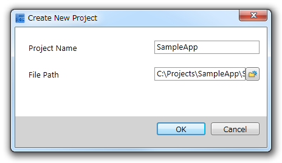
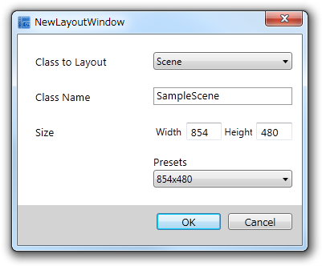
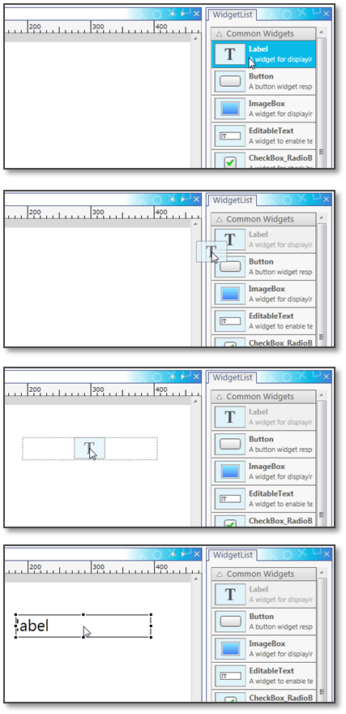
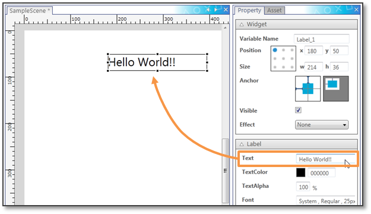
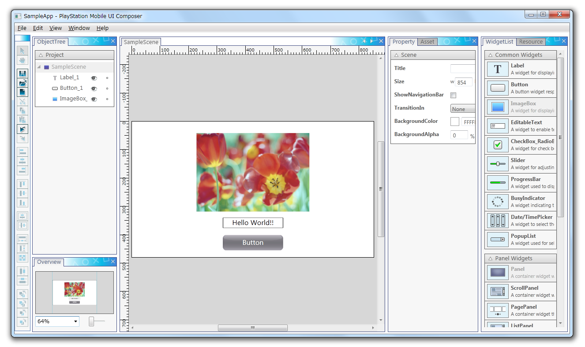
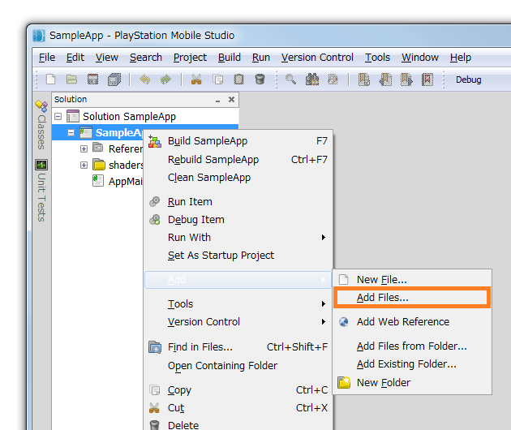
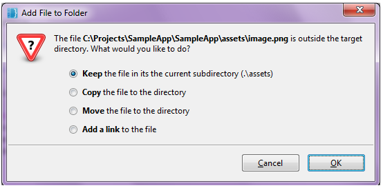
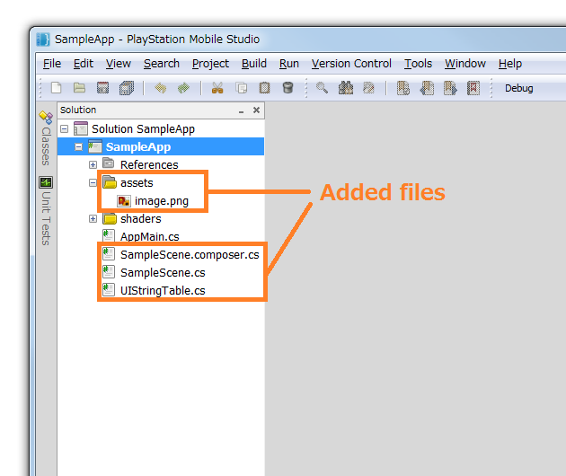

This chapter creates a simple application to exemplify layout operations of the UI Composer.
The procedural flow - beginning with the output of the laid-out contents, to their loading onto the project (PSM Studio project) written in UI Toolkit Programming Guide - Quick Start - will be explained. Create a PSM Studio project in advance following instructions in the UI Toolkit Programming Guide - Quick Start .
Contents
First, create a new UI Composer project. Start up the UI Composer and from the main menu, select [File] - [Create New Project] (Figure 1).

Figure 1 Create a New UI Composer Project
To each item in the dialog for creating a new project, enter as follows (Figure 2).
- For the "Project Name", enter the same name as the project name of the PSM Studio project. In this example, enter "SampleApp".
- For "File Path", enter the folder where the PSM Studio project file (csproj file) is located. In this example, enter "C:\Projects\SampleApp\SampleApp".
Figure 2 Entering the Project Name and Folder
When pressing the "OK" button of the dialog for creating a new project, the dialog for creating a new layout will be displayed (Figure 3).

Figure 3 New Layout Creation Dialog
This section creates a layout (destination to place widgets) and the layout canvas (screen for carrying out layout work). Layouts can be added to later on; one layout corresponds to one output class.
To each item in the dialog for creating a new layout, enter as follows (Figure 4).
- "Scene" will be selected by default for a "Class to Layout". This will not be changed in this example.
- For "Class Name", enter the name of the automatically-created class. In this example, enter "SampleScene".
- For "Size", enter the height and width of the class to lay out. Several settings are provided as presets; it is also possible to make a selection out of these. This example specifies a width of 854 px and a height of 480 px from the presets.
Figure 4 Entering Configuration Items of the Layout
When the OK button is selected, a new layout canvas will be displayed in the layout window (Figure 5).

Figure 5 Newly-created Layout Canvas
A GUI screen will be laid out with three widgets: Label, Button, and ImageBox.
First, drag-and-drop the Label from the WidgetList window and place it on the layout canvas (Figure 6).
Figure 6 Label Placement
When selecting a Label, the properties of the Label will be displayed in the property window. By editing the Text property, the text displayed to the Label can be edited (Figure 7).
Figure 7 Editing the Label Text Property
In the same manner as for Label, drag-and-drop the Button from the WidgetList window and place it on the layout canvas.
Lastly, place the ImageBox.
First, open the asset window to select the image file you want to display from the "Import image" button and load the image file as an asset. image.png file is added in this example (Figure 8).

Figure 8 Reading Image Files
First, select the image read from the asset window and drag-and-drop the image to the layout canvas (Figure 9).

Figure 9 ImageBox Placement
This completes layout operations (Figure 10).
Figure 10 Laid-out SampleScene
Output the laid-out contents as a source code.
From the UI Composer main menu, select [File] - [Build] to build a project (Figure 11).

Figure 11 UI Composer Project Build
With initial settings, the C# source code will be created in the same folder as the UI Composer project file. In this example, 3 files, SampleScene.cs, SampleScene.composer.cs and UIStringTable.cs, will be created.
SampleScene.cs and SampleScene.composer.cs are partial class definitions of the SampleScene class, and layout operation contents carried out in the preceding section are all defined in SampleScene.composer.cs. SampleScene.composer.cs is overwritten with every build; write operations - such as, the event handler being generated by pressing a button - in SampleScene.cs. If SampleScene.cs already exists, it is not newly-generated.
Operations of the UI Composer end here.
Change the PSM Studio project so that the laid-out SampleScene is displayed.
First, load the UI Composer output results and the asset file to the PSM Studio project.
Open the PSM Studio project and add the asset file (image.png) and the C# files (SampleScene.cs, SampleScene.composer.cs, and UIStringTable.cs) output in the above section (Figures 12).
Figure 12 PSM Studio Project File Addition
Upon adding an asset file, if the "Add File to Folder" dialog is displayed, select "Keep..." (Figure 13).
Figure 13 Confirmation Dialog for Adding a UI Asset File
The PSM Studio project after an asset file addition will be as follows (Figure 14).
Figure 14 PSM Studio Project with the UI Composer Output Result Loaded
Next, modify the initialization code within the main logic.
Change the sections written to AppMain.cs as follows in UI Toolkit Programming Guide - Quick Start.
// Create scene Scene scene = new Sce.PlayStation.HighLevel.UI.Scene(); Label label = new Label(); label.X = 10.0f; label.Y = 50.0f; label.Text = "Hello World!"; scene.RootWidget.AddChildLast(label); // Set scene UISystem.SetScene(scene, null);Change the above sections as follows. If the class name and namespace created by the UI Composer differ, correct them.
// Create scene var MyScene = new SampleApp.SampleScene(); // Set scene UISystem.SetScene(MyScene, null);Correct the following section of the AppMain.cs file to make the background color white.
// Clear the screen graphics.SetClearColor (0.0f, 0.0f, 0.0f, 0.0f); graphics.Clear ();Change the above sections as follows.
// Clear the screen graphics.SetClearColor (1.0f, 1.0f, 1.0f, 1.0f); graphics.Clear ();In this state, build and execute the application in the same manner as in UI Toolkit Programming Guide - Quick Start; the laid-out screen should be displayed as is (Figure 15).

Figure 15 Execution Result of the Application on the Simulator